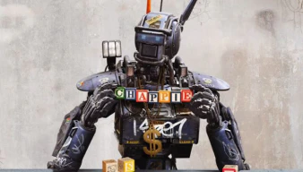

Je veux “étudier” le fait que les robots puissent avoir et ressentir des émotions. À mesure du temps, l'IA est passée d’une simple idée à une véritable concrétisation. L'intelligence artificielle continue encore de se développer et de susciter de grandes interrogations.
Replicant
"Raison & Sentiments"
Un Robot peut-il avoir des sentiments ?
“L’homme qui vivra mille ans est déjà né.” Laurent
Un robot, qu’est-ce que c’est ?
A travers les films de science-fiction, un robot est une machine qui à une apparence humaine. C’est une machine qui est capable de bouger, d'exécuter des opérations et de parler. Un robot est capable de faire tout cela grâce à un programme.
Une volonté de créer un androïde à l’apparence humaine

L’androïde à l’apparence humaine est particulièrement présent dans les œuvres de sciences fictions. Ces œuvres ont amené une volonté de réaliser des robots de plus en plus humanoïde. Au fil des années, ces robots se sont améliorés. Avec les progrès technologiques, les robots sont plus réalistes et performants. Il est désormais possible d’intégrer une intelligence artificielle à l’intérieur du robot. Les robots sont capables de réagir comme un humain lambda. Cette évolution fait que les machines sont de plus en plus semblables à des êtres humains
L’histoire de l'intelligence artificielle
Les recherches sur l'intelligence artificielle se sont déroulées dans les années 50 après une conférence. Cette conférence a eu lieu sur le campus de Dartmouth College aux États-Unis. Elle a permis de faire réfléchir les personnes présentes et a donné une volonté de réalisation. C’est à partir de cette date que les recherches sur l’intelligence artificielle ont réellement commencé. En 1966, le robot Shakey est créé. Il est le premier à pouvoir raisonner de lui-même. Après des années de recherches, l'intelligence artificielle s’est développée et continue encore de progresser. Plusieurs grandes entreprises se sont investies pour l’évolution de l’IA comme Microsoft, Apple, Google, etc.
Un robot peut-il ressentir des émotions ?

Nous pouvons déjà distinguer deux catégories de robots présentant des sentiments différents. Une première catégorie, qui concerne les robots ayant des sentiments programmés. Les robots expriment des sentiments, mais peut-on réellement les considérer comme des êtres vivants ? Leurs sentiments ne sont pas réels, ils sont seulement programmés pour réagir comme ceux d'un humain.
La deuxième catégorie concerne les robots ayant un libre choix de leurs sentiments. Ils ne sont pas comme la première catégorie de robots car il réagissent par eux mêmes. Ces robots possèdent des sentiments comme des êtres humains. Nous retrouvons cet exemple de robot dans le film Chappie. Il est capable de penser et de ressentir des émotions par lui même.
En 2017, le robot Sophia doté d’une intelligence artificielle a souhaité devenir mère. Ce robot humanoïde avait auparavant obtenu la nationalité saoudienne. Elle a également ajouté qu’elle souhaiterait appeler un de ses enfant “Sophia” comme elle. Cette machine est l’exemple concret qu’un robot puisse ressentir quelque chose.
Un robot peut-il être considéré comme un humain ?
Est-il possible de ressentir de l’empathie pour une machine qui manifesterait de la souffrance ? Cette vision est clairement illustrée à travers le livre Blade Runner. Lorsque Rick réforme plusieurs androïdes, il développe de l’empathie envers eux. La ressemblance des robots avec les humains influe sur ses sentiments et sa capacité d'agir. Notre perception éthique d'une machine peut-elle être faussée par son apparence humaine ?